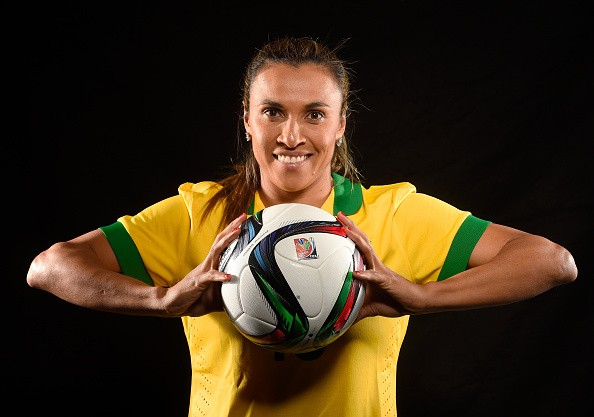

Biography
Marta Vieira da Silva is a player for the OrlandoPride Women's National Soccer League and the Brazil National Team. Marta plays as a forward on Brazil's team. She has played in six FIFA Women's World Cup game. She was discovered by Brazilian soccer coach, Helena Pacheco when she was 14. Marta started her career at Vasco da gama. She finally joined Orlando Pride National Women's Soccer League after Rosengard lost to Barcelone in UEFA Women's Champions League's quarterfinals. Soccer superstar, Pelé, gave Marta the nickname "Pelé in skirts." On March 14 2017, Marta received her Swedish Citizenship. She made a statement that she would like to keep her brazilian citizenship as well as Swedish.